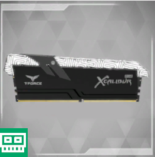

|
Home |
PC-Kompunenten |
Doku |
Quiz |

|

|

|

|

|

|

|

|
Was ist eine CPU ?
Die CPU (Central Processing Unit) ist das Hauptgehirn eines Computers. Sie führt Berechnungen und Anweisungen aus, die erforderlich sind, um Softwareanwendungen auszuführen. Die CPU verarbeitet Daten, führt mathematische Operationen durch und koordiniert den Fluss von Informationen im gesamten Computersystem. In einfachen Worten ist die CPU das Herzstück des Computers, das die meisten Rechenaufgaben übernimmt und die Funktionalität des gesamten Systems steuert.
Welche Arten von CPU gibt es ?
|
Desktop CPU: |
Dies sind die Prozessoren, die in Desktop-Computern eingebaut sind. Sie sind oft auf eine hohe Leistung bei allgemeinen Aufgaben ausgelegt und werden in PCs und Workstations verwendet. |
|
Laptop-CPUs: |
Ähnlich wie Desktop-CPUs, jedoch für den Einsatz in Laptops und anderen tragbaren Geräten optimiert. Sie sind oft energieeffizienter, um die Akkulaufzeit zu verlängern. |
|
Server-CPUs: |
Diese Prozessoren sind darauf ausgelegt, hohe Arbeitslasten und Multitasking-Anforderungen in Serverumgebungen zu bewältigen. Sie können mehrere Kerne und Threads haben, um viele Aufgaben gleichzeitig zu bearbeiten. |
|
Mobile CPUs: |
Verwendet in Smartphones und Tablets. Sie sind darauf ausgerichtet, eine gute Leistung bei niedrigem Energieverbrauch zu bieten. |
|
Embedded-CPUs: |
Diese Prozessoren sind in eingebetteten Systemen integriert, wie zum Beispiel in Haushaltsgeräten, Autos oder industriellen Anwendungen. |
|
High-Performance Computing (HPC) CPUs: |
Diese CPUs sind für anspruchsvolle wissenschaftliche und technische Berechnungen in Supercomputern oder Clusterumgebungen optimiert. |
|
Grafikprozessoren (GPUs): |
Obwohl nicht im herkömmlichen Sinne CPUs, sind GPUs spezialisierte Prozessoren, die für grafikintensive Aufgaben optimiert sind. Sie werden oft in Gaming-PCs, aber auch in Rechenzentren für bestimmte Berechnungen verwendet. |
|
ARM-CPUs: |
Basierend auf der ARM-Architektur, werden diese CPUs häufig in Mobilgeräten, eingebetteten Systemen und zunehmend auch in Servern eingesetzt |
|
Quantenprozessoren: |
Eine aufstrebende Technologie, die auf den Prinzipien der Quantenmechanik beruht. Quantenprozessoren haben das Potenzial, bestimmte Arten von Berechnungen viel schneller durchzuführen als herkömmliche CPUs. |
Was sind Sockel und welche gibt es?
Der Begriff "Sockel" bezieht sich auf den mechanischen und elektrischen Anschluss, über den die CPU mit dem Hauptplatinen- oder Motherboard-Steckplatz verbunden ist. Es gibt viele verschiedene Sockeltypen, und ihre Auswahl hängt von der jeweiligen Prozessorarchitektur ab. Hier sind einige der gängigen CPU-Sockeltypen:
|
Intel-Sockel: |
|||||
|
LGA 1200: |
Aktuell (Stand 2022) für Intel-Core-Prozessoren der 10. und 11. Generation. |
LGA 1700: . |
Eingeführt für Intel-Core-Prozessoren der 12. Generation (Alder Lake) |
||
|
AMD-Sockel: |
|||||
|
AM4: |
Für Ryzen-Prozessoren der 1., 2., 3., und 5. Generation sowie für einige Athlon- und APU-Modelle. |
sTR4 / sTRX4: |
Für High-End-Desktop-Prozessoren (HEDT) von AMD, wie Threadripper-Modelle. |
AM5: |
Zukünftiger Sockel für kommende AMD-Prozessoren (Stand 2022). |
|
Intel-Server-Sockel: |
LGA 3647: Für Xeon-Prozessoren der Scalable-Familie. |
||||
|
AMD-Server-Sockel: |
SP3: Für EPYC-Serverprozessoren. |
||||
|
ARM-Sockel: |
Verschiedene Sockeltypen, je nach Hersteller und Modell. ARM-basierte CPUs werden in einer Vielzahl von Geräten eingesetzt, darunter Smartphones, Tablets und eingebettete Systeme. |